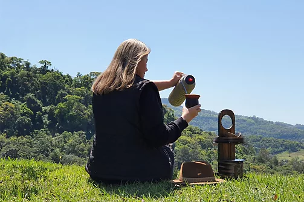
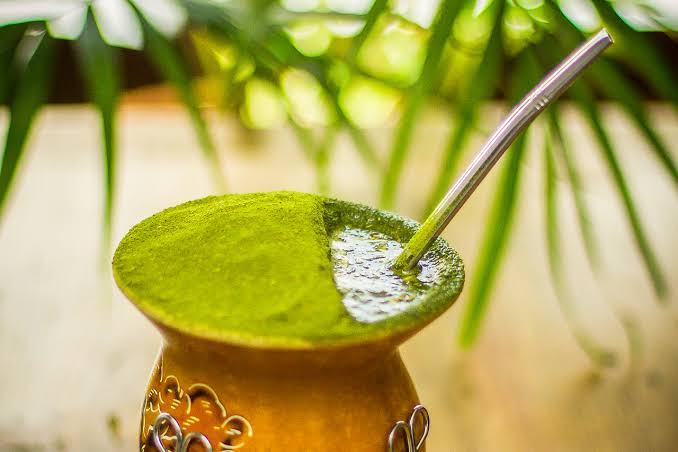
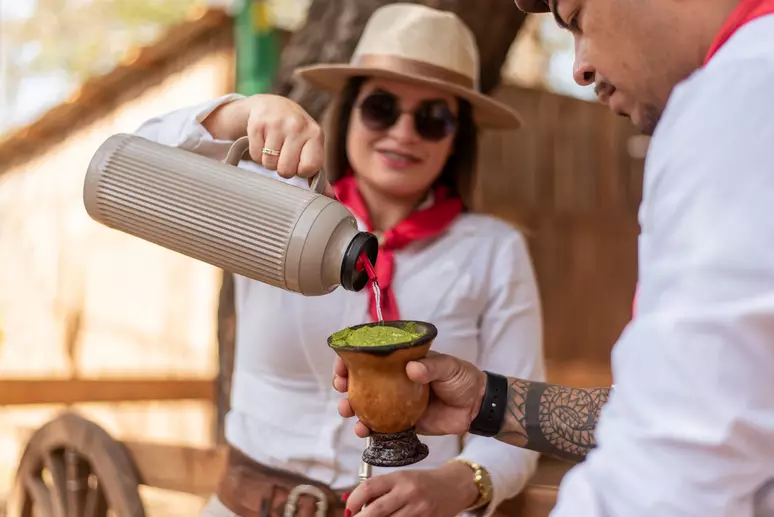
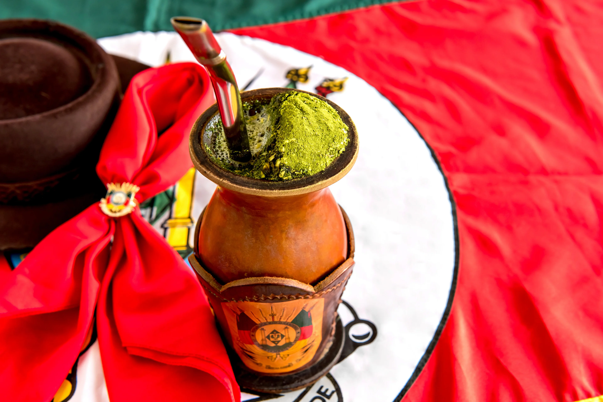

tradução cultural sobre o chimarrão
A tradução cultural é um conceito fundamentado na antropologia, nos estudos literários e nas ciências sociais que A tradução cultural é um conceito fundamental nas ciências sociais que vai além da simples conversão de palavras entre idiomas, envolvendo a interpretação, negociação e transformação de significados entre diferentes culturas. Originado na antropologia e consolidado pelos estudos pós-coloniais e literários, o termo descreve como saberes, práticas e identidades se deslocam e se reformulam ao entrar em contato com o "outro". Teorizados por pensadores como Homi Bhabha, esses processos evidenciam que nenhuma cultura é isolada ou estática, ocorrendo sempre em um espaço liminar ou "terceiro espaço" de hibridização. Em vez de buscar uma equivalência perfeita, a tradução cultural revela as assimetrias de poder e as tensões geopolíticas subjacentes à comunicação global, onde o ato de traduzir pode tanto colonizar e silenciar quanto atuar como uma ferramenta de resistência, desconstrução e emancipação de narrativas marginalizadas.

chimarrão como tradução cultural envolve a transformação de uma prática indígena sagrada
O chimarrão como tradução cultural exemplifica como um elemento sagrado de uma cultura é reapropriado, ressignificado e integrado à identidade de outra, perdendo parte de seu sentido místico original para se tornar um símbolo secular de socialização e pertencimento regional. motor de desenvolvimento econômico, urbano e social do estado.

Um elemento cultural forte cria um sentimento de conexão entre as pessoas. Quando os paranaenses preparam o chimarrão
O preparo do chimarrão no Paraná vai além do simples ato de consumir uma bebida quente; ele é um ritual de conexão, hospitalidade e identidade cultural compartilhada. Herdada dos povos indígenas e consolidada pelos tropeiros, essa tradição funciona como um forte elo social que aproxima diferentes gerações nas casas e praças paranaenses. Ao dispor a erva-mate na cuia, moldar o barranco e verter a água aquecida, o preparador inicia um momento de pausa na rotina urbana ou rural. A roda de chimarrão que se forma a seguir estabelece uma dinâmica democrática de convivência, onde a cuia passa de mão em mão sob regras implícitas de respeito, como não mexer na bomba. Esse compartilhamento gera um espaço de diálogo, escuta e calor humano, transformando a bebida em um símbolo de união coletiva. Assim, o chimarrão se mantém vivo no cotidiano do estado como uma manifestação cultural afetiva que reforça o sentimento de pertença e resgata as raízes históricas do povo paranaense


curiosidades
COLOQUE O TÍTULO AQUI
: Os primeiros a consumirem a erva-mate foram os índios Guarani e Caingangue. Eles mascavam as folhas ou preparavam infusões em recipientes de cabaça para ganhar energia durante longas caminhadas.O "Chá dos Jesuítas": No século XVII, os padres jesuítas tentaram proibir o consumo do chimarrão por acharem que er a "coisa do diabo" ou encorajava a preguiça. Ao perceberem que a bebida não continha álcool e trazia vitalidade, passaram a incentivar o cultivo.
O "Linguajar Secreto do Mate": Antigamente, o modo como o mate era servido podia enviar mensagens sutis. Servir um chimarrão com açúcar queimado significava "simpatia"; com raspa de coco, "amor"; mas entregar um mate frio indicava "desprezo" ou um sinal claro de que a visita já devia ir embora.Benefícios para a saúde: A erva-mate (Ilex paraguariensis) é rica em antioxidantes, minerais e cafeína (conhecida no mate como "mateína"). Ela auxilia no combate à fadiga, melhora a digestão e age como estimulante natural, razão pela qual os antigos tropeiros conseguiam percorrer longas distâncias consumindo a bebida.